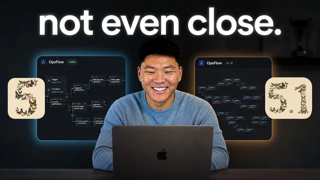

Fable 5.1과 5에게 같은 앱을 만들게 했다

원본 영상 보기 →
- 모델 선택보다 "예산 배분"이 결과물을 가릅니다
- 공정한 벤치마크의 기준선은 "동일 예산"이에요
- 에이전트에 "완료의 정의"와 "멈추지 마라"를 명시해야 해요
I Had Fable 5.1 and 5 Build Me the Same App
채널: Nate Herk | AI Automation 게시일: 2026-09-03 원본: https://www.youtube.com/watch?v=5FukkI4fbiU
한 줄 요약
Nate Herk가 재미있는 실험을 했어요. Fable 5.1과 Fable 5에게 토씨 하나 똑같은 프롬프트를 주고, 같은 앱을 만들게 시킨 거죠. 결과가 흥미롭습니다. 5.1은 약 1,200달러에 36시간, 5는 약 500달러에 반나절이 걸렸어요. 코드 품질 점수는 5.1이 살짝 앞섰는데(9.1 대 8.4), Nate는 "그 차이가 700달러를 정당화하진 못한다"며 승자를 Fable 5로 꼽았습니다.
전체 내용 정리
두 에이전트에게 준 프롬프트는 단 한 단어만 달랐어요
Nate는 두 에이전트에게 완전히 똑같은, "크고 목표 지향적인" 프롬프트를 줬어요. 유일한 차이는 한쪽엔 "너는 Fable 5.1이고 이 폴더에서 일한다", 다른 쪽엔 "너는 Fable 5다"라는 문장 하나뿐이었죠.
그런데도 두 모델이 프롬프트를 해석하는 방식이 꽤 달랐습니다. 이게 이 실험의 핵심 관찰이에요.
직접 만들지 말고 "오케스트레이션"하라고 시켰습니다
재미있는 건 Nate가 두 모델에게 앱을 직접 코딩하지 말라고 못박았다는 점이에요. 프롬프트는 이런 식이었습니다.
"너는 전략, 기획, 위임, 순서 배치, 품질 기준, 최종 승인을 담당한다. 엔지니어링 리서치·디버깅·테스트·비주얼 디자인 제작을 직접 하지 마라. 동적 워크플로우로 실행을 위임해 네 컨텍스트를 아껴라."
워커 배분도 지정해줬어요. 아키텍처·제품/디자인 방향·어려운 문제 해결·독립 리뷰에는 주로 Opus 워커를, 구현·리서치·테스트·디버깅·반복에는 주로 Sonnet 워커를 쓰라고요. 워커에게 명확한 소유권을 주고, 편집 충돌을 막고, 결과가 약한 워커는 교체하거나 다시 지시하되 "워커의 실패도 네 책임"이라고 선을 그었습니다.
그리고 마지막에 이 한 줄을 덧붙였어요. "그럴듯한 구현에서 멈추지 말고, 완성된 제품이 실제로 작동하고 발표 가능한 상태라는 객관적 증거가 나올 때까지 계속 오케스트레이션하라."
만든 앱: 장애 대응 절차를 그림으로 그리고 리허설하는 도구
두 에이전트가 만든 건 "ops flow"라는 도구예요. 장애 대응 워크플로우를 설계하고 시뮬레이션하는 로컬 우선(local-first) 비주얼 자동화 스튜디오죠.
n8n 같은 워크플로우 자동화 플랫폼이 아닙니다. 프로덕션이 깨졌을 때 무슨 일이 벌어지는지를 눈으로 보여주고 리허설하는 용도예요. 쉽게 말해 비상 대응 계획을 순서도로 그리면, 그게 어떻게 진행되는지 지켜볼 수 있게 해줍니다.
두 UI 비교: 5.1은 정보 위계가, 5는 확대해도 일관된 텍스트가 강점
두 앱 모두 왼쪽에 trigger·condition·action·approval·resolution 노드를 두고 캔버스로 끌어와 연결하는 방식이에요. 가로가 아니라 세로형 노드 그래프죠.
Nate는 두 앱을 실행해 노드를 연결하고, 연결을 지우고, run을 눌러 처리 과정이 시각적으로 흐르는 걸 확인했어요. 완료된 실행에서 어떤 노드가 건너뛰어졌고(예: 한 브랜치에서 3개 skip, 7개 실행) 결과가 무엇인지(예: "롤백으로 완화됨") 볼 수 있었습니다.
Fable 5가 만든 쪽은 트리거 하나가 한 대상에만 연결되고, 승인(approval) 노드에서 실제로 멈춰 지정된 이메일의 사인오프를 기다렸어요. Nate가 승인하면 경로를 따라가고, 거절하면 실행이 그냥 멈췄죠. 노드가 잘못되면 payload에서 값을 바꿔(예: "minor degradation" 선택) 다시 실행해 false 경로로 보낼 수 있었습니다. 오토세이브 타임스탬프가 명확하고, "severity 누락" 같은 유용한 네거티브 테스트 프리셋을 포함했고, 현재 payload에 대한 라이브 프리뷰가 뛰어났어요.
Fable 5.1이 만든 쪽은 Nate가 보기에 UI가 조금 더 깔끔했습니다("둥근 크롭 색상 카드"처럼 AI가 만든 티가 나는 요소가 덜하다고 하더라고요). 정보 위계가 더 강하고 캔버스가 더 읽기 쉬웠고, 실행 요약이 강하고 실행 로그를 다운로드할 수 있었어요. 성공·실패·건너뜀·대기 상태의 시각적 구분도 명확했죠. 거절하면 실행이 "완화됨"이라고 거짓 주장하지 않고 제대로 실패 처리됐습니다.
다만 아쉬운 점이 있었어요. 확대(zoom in)하면 텍스트가 같이 커져서 "싸구려처럼 보인다"고 Nate가 지적했습니다. 반대로 Fable 5는 확대·축소해도 텍스트 크기가 일정하게 유지됐어요.
참고로 두 앱은 워크플로우를 JSON으로 가져오는 스키마도 서로 달랐습니다. 한쪽에서 되는 임포트가 다른 쪽에서는 캔버스에 아무것도 안 뜨는 식으로 호환이 안 됐죠.
제3자 평가: Codex가 매긴 점수는 5.1이 근소 우세
Nate는 Codex로 두 앱을 평가하게 했어요. 어느 쪽이 어느 모델인지는 알리지 않고 포트 번호(4382, 5321)로만 지칭했습니다. 그리고 "같은 프롬프트를 준 두 에이전트의 결과물이다. 철저히 테스트하고 각각 뭐가 더 나은지 말해달라"고 시켰죠.
가중 점수는 Fable 5.1이 9.1, Fable 5가 8.4였어요. 비주얼 디자인·위계, 첫 실행 편의성, 워크플로우 작성, 드라이런 경험에서 5.1이 앞섰고, 검증·안전성도 5.1이 앞서긴 했지만 아주 근소했습니다. 결국 5.1이 0.7점 차로 이겼어요.
비용·시간: 5.1이 두 배 넘게 비싸고 세 배 오래 걸렸습니다
여기서 반전이 나옵니다. Fable 5.1은 약 1,200달러에 약 36시간(하루 반)이 걸렸고, Fable 5는 약 500달러에 반나절이 걸렸어요.
모델 사용 분포도 크게 달랐습니다. 5.1은 작업의 약 57%를 Opus로, 약 40%를 Sonnet으로 했고 자기 자신은 전체 토큰의 약 3%만 썼어요. Fable 5는 약 80%를 Sonnet으로, 약 12%를 Opus로, 약 7%를 자기 자신으로 처리했죠. 이게 더 싸고 빠른 대신 일부는 조금 못한 이유일 수 있습니다.
컨텍스트 창은 5.1이 40만 4천 토큰(창의 약 40%), 5가 26만 토큰(약 26%)을 썼어요. 참고로 Fable 5의 입력 토큰이 256으로 찍힌 건 Nate가 보기에 뭔가 잘못된 수치 같다고 했습니다.
Nate의 결론: 이 대결의 승자는 Fable 5
Nate는 "Fable 5.1이 더 나쁜 모델"이라고 말하는 게 아니라고 분명히 했어요. 실제로 일반 지식 노동과 일상 작업에서는 5.1이 더 효율적이고 의도를 더 잘 이해하는 느낌이라, 개인적으로는 5.1을 조금 더 선호한다고 합니다.
하지만 이 시나리오에서는 비용·시간·효율·최종 결과물을 종합하면 Fable 5가 이겼다고 봤어요. 두 앱의 최종 품질은 사실 꽤 비슷한데, 700달러를 더 내고 5.1 버전을 살 사람은 없을 거라는 게 요지죠.
만약 Fable 5 버전에 700달러를 더 써서 개선했다면 지금 5.1 버전보다 더 나았을 거라고 추정하기도 했습니다. 공정한 비교의 기준선은 "각 모델에 똑같은 금액을 썼을 때 어디까지 나오는가"인데, 5.1 워크플로우가 519달러만 썼다면 이만큼 좋은 결과는 안 나왔을 거라고 덧붙였어요.
핵심 인사이트
- 모델 선택보다 "예산 배분"이 결과물을 가릅니다: 같은 프롬프트라도 5.1은 비싼 Opus 워커를 절반 넘게 쓰고, 5는 싼 Sonnet 워커를 80% 썼어요. 결과 품질 차이(0.7점)보다 비용 차이(2배 이상)가 훨씬 컸죠. 에이전트에게 일을 시킬 때 "어떤 모델을 쓰느냐"만큼 "어떤 등급의 워커에 얼마를 태우느냐"를 통제하는 게 비용 대비 효과를 결정합니다.
- 공정한 벤치마크의 기준선은 "동일 예산"이에요: 더 오래 돌고 더 비싼 쪽이 점수가 높은 건 어찌 보면 당연하잖아요. Nate가 "같은 돈을 썼다면 어땠을까"를 기준선으로 삼은 것처럼, AI 결과물을 비교할 때는 투입 비용을 맞추고 봐야 판단이 섭니다.
- 에이전트에 "완료의 정의"와 "멈추지 마라"를 명시해야 해요: Nate의 프롬프트는 산출물 요구사항, 완료의 정의, "그럴듯한 구현에서 멈추지 말고 작동 증거가 나올 때까지 계속하라"를 못박았습니다. 오케스트레이션형 에이전트는 이 경계 조건이 없으면 어중간한 지점에서 손을 떼거든요.
오늘 당장 해볼 것
- AI로 도구나 자동화 제작을 외주 주거나 직접 시킬 때, 산출물 명세와 함께 "완료의 정의"(무엇이 되면 끝인지)를 문서로 먼저 적어보세요. 애매하면 결과물도 애매하게 나오니까요.
- 업체나 도구에 "결과물이 실제로 작동하는지 객관적으로 검증한 근거(테스트 실행 화면, 로그)를 함께 달라"고 요청해보세요. "그럴듯해 보이는" 상태와 "검증된" 상태는 다릅니다.
- 두 가지 방식(비싼 옵션 vs 싼 옵션)을 비교할 때는 투입 비용이나 시간을 같은 조건으로 맞춰 보거나, 최소한 "이 차액만큼 싼 쪽을 더 다듬으면 어디까지 가는가"를 함께 따져보고 결정하세요. 기준선이 다르면 비교 자체가 무의미해지거든요.